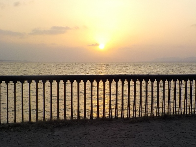
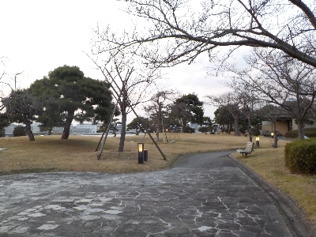
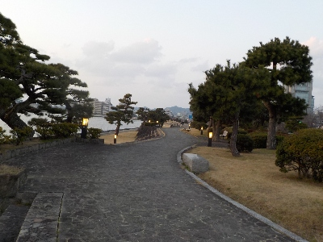

白潟公園で夕日を見ました。
更新日 : 2024/03/03

島根県立美術館にいましたが、人が多くなったので白潟公園に移動しました。
ここからだと嫁が島が遠いので人気がないのかもしれません。
サンセットクルージングかな？

白潟公園は観光地らしくしっかり整備されています。

近くに商店とか飲食店があれば賑わうんだろうけど、そういうのはないです。田舎でそういうのは求めてはいけない。
静かでいい雰囲気の公園でした。
島根県松江市白潟本町
更新日 : 2024/03/03

島根県立美術館にいましたが、人が多くなったので白潟公園に移動しました。
ここからだと嫁が島が遠いので人気がないのかもしれません。
サンセットクルージングかな？

白潟公園は観光地らしくしっかり整備されています。

近くに商店とか飲食店があれば賑わうんだろうけど、そういうのはないです。田舎でそういうのは求めてはいけない。
静かでいい雰囲気の公園でした。